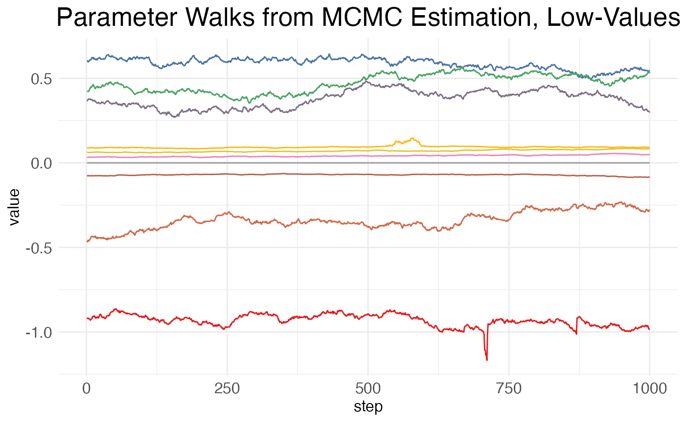
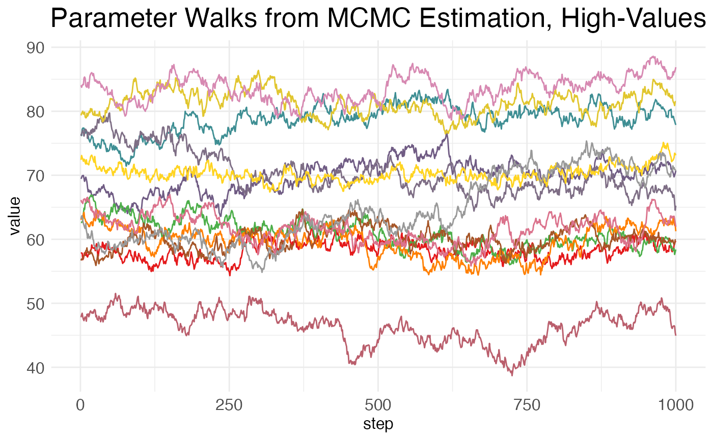
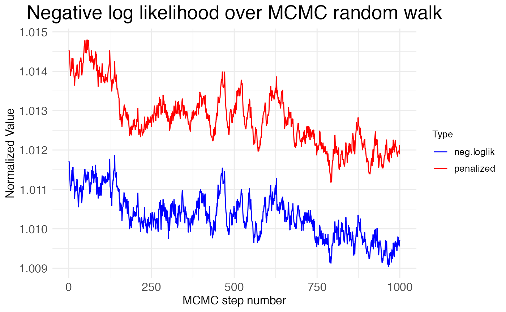
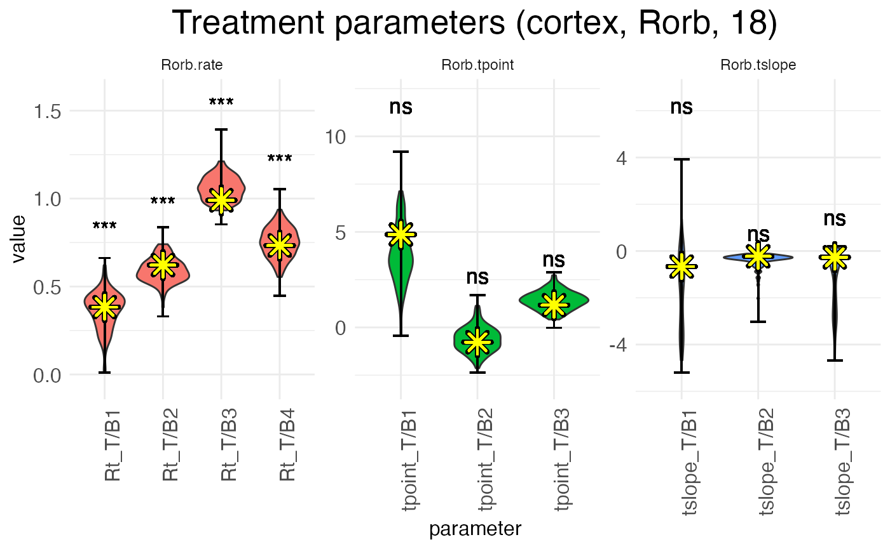
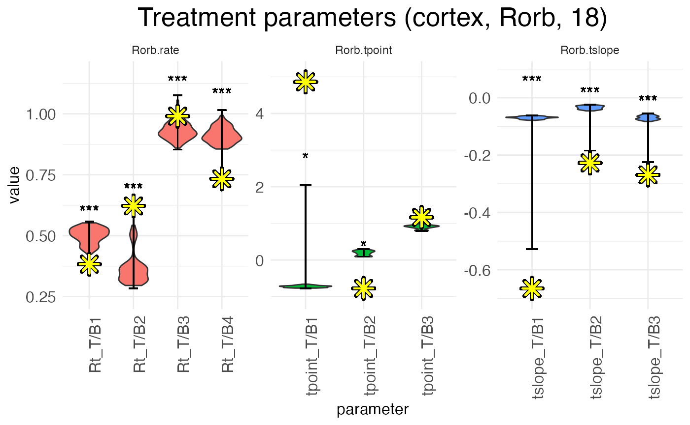
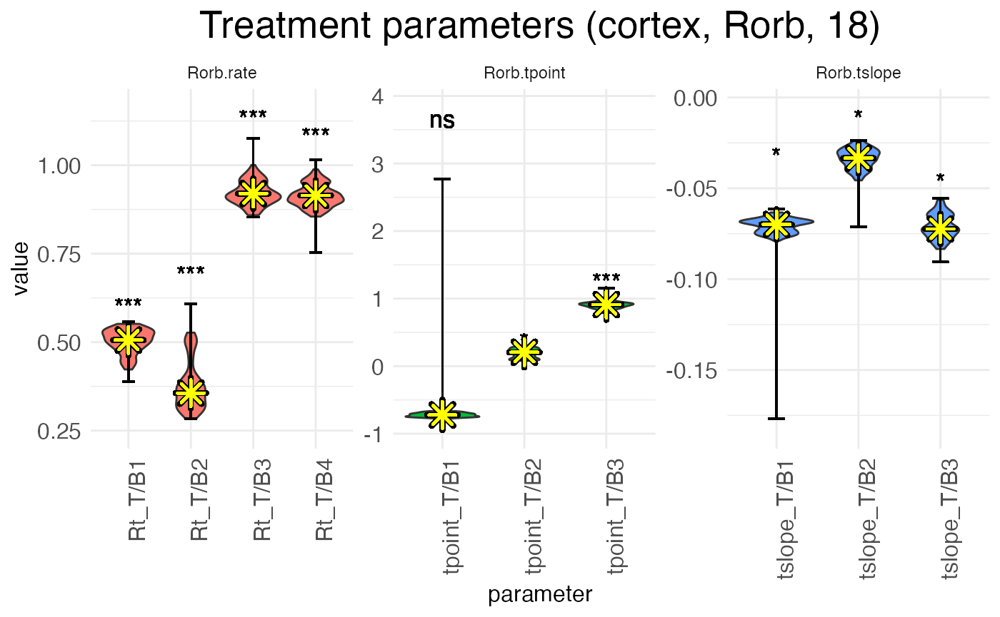
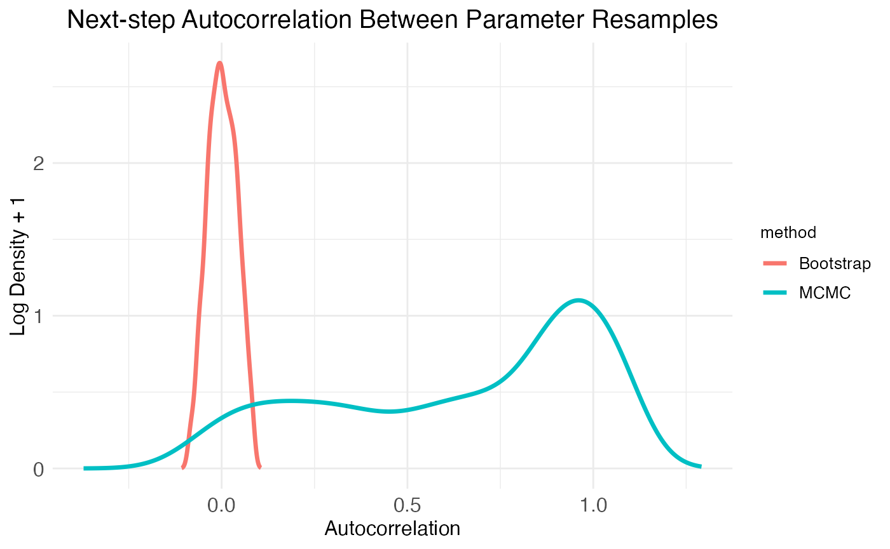
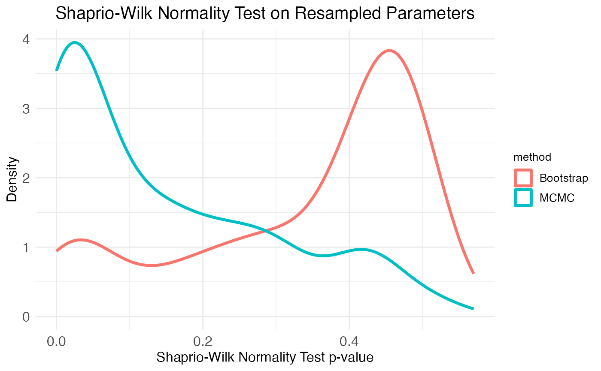
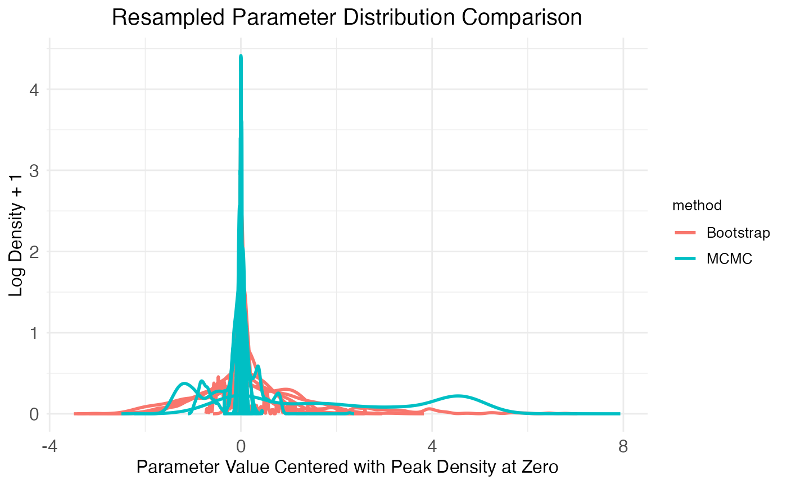

Customizing statistical analyses
Michael Barkasi
2026-02-19
tutorial_stats.RmdIntroduction
The purpose of a wisp model is to test whether a factor \xi has an effect \beta_\xi (such that \beta_\xi \neq 0) on the spatial distribution of a gene’s expression, that distribution being parameterized in terms of expression rate, expression-rate transition points, and transition slopes. The true value of \beta_\xi is estimated by resampling, either using a Markov chain Monte Carlo (MCMC) algorithm, or by refitting the model to resamples of the data (bootstrapping). This tutorial will not explain how the MCMC walk or bootstrap resampling is performed; these details are covered in the paper introducing wisp. Instead, this tutorial will focus on how p-values and confidence intervals (CI) are computed from the sampling (i.e., hypothesis testing), how the MCMC and bootstrapping approaches compare, and how to adjust various key settings in wispack.
Hypothesis testing
Suppose for each spatial parameter z, gene g, context c, and factor \xi we have some set of resamples of the associated effect \beta, either generated via MCMC walk or bootstrapping.
Computations
Let \bar{\Phi} be the matrix of all of these values \beta, with rows I corresponding to resamples and rows J corresponding to the various combinations of z, g, c, and \xi. Let \Phi_{IJ} be an element of this matrix, \langle\Phi\rangle_J be a column of the matrix, and \langle\Phi\rangle_I be a row of the matrix. Then a CI for significance level \alpha can be computed for each parameter J via the quantiles of the sampled values:
\text{CI}(J,\alpha) = \langle Q_J(\alpha/2), Q_J(1-\alpha/2)\rangle
In wispack, the quantiles Q_J are computed using type 7 linear interpolation (the default for R) over \langle\Phi\rangle_J.
To compute p-values, we use the empirical cumulative distribution function:
\text{ecdf}(X,X^\prime) = \frac{|\{X\leq X^\prime\}|_{\#}}{|X|_{\#}}
with |\cdot|_{\#} being the cardinality operator. First, for each parameter J, we compute the two-sided p-value by first recentering the sampled values \langle\Phi\rangle_J around the null hypothesis of zero effect (i.e., \mu = 0):
\langle\Phi\rangle_J^{\mu=0} = \langle\Phi_J - \mu(\langle\Phi\rangle_J)\rangle_J
for \Phi_J the scalar value of the effect \beta of parameter J to be tested. Next, the probability of observing a value of at least |\Phi_{IJ}|_{\text{abs}} for the effect \beta of parameter J, assuming the true value is zero, is computed as:
p(\Phi_{IJ}) = 1 - \text{ecdf}(\langle\Phi\rangle_J^{\mu=0}, |\Phi_{IJ}|_{\text{abs}}) + \text{ecdf}(\langle\Phi\rangle_J^{\mu=0}, -|\Phi_{IJ}|_{\text{abs}})
with |\cdot|_{\text{abs}} being absolute value. Wispack uses either Holm-Bonferroni or Bonferroni corrections for multiple comparisons, with Holm-Bonferroni the default.
Implementation
Suppose we have the results from a run of wisp, such as this one which matches the example from the RORB tutorial, except that in addition to the default thousand-step MCMC walk with a hundred-step burn-in, it also performs a thousand bootstrap resamples:
model <- wisp(
count.data = countdata,
variables = data.variables,
plot.settings = list(
print.plots = FALSE,
dim.bounds = colMeans(layer.boundary.bins)
),
bootstraps.num = 1000,
max.fork = 5,
verbose = TRUE
)The result of this run comes with wispack and can be loaded as follows:
# Set random seed for reproducibility
set.seed(123)
# Load wispack
library(wispack, quietly = TRUE)
# Load demo model
model <- readRDS(
system.file(
"extdata",
"corticallaminar_model.rds",
package = "wispack"
)
)The function wisp will automatically compute p-values and CIs, unless its option fit_only is set to true (by default, it’s false). However, wisp does not allow for customizing the computations for p-values and CIs. By default, it uses \alpha = 0.05 and a Holm-Bonferroni correction.
This default analysis can be accessed from the output of wisp via its object stats and sub-object parameters:
## parameter estimate CI.low CI.high p.value p.value.adj alpha.adj significance
## 1 baseline_cortex_Rt_Bcl11b_Tns/Blk1 3.3874762662 3.30569175 3.40219340 NA NA NA
## 2 beta_Rt_cortex_Bcl11b_right_X_Tns/Blk1 -0.0002723492 -0.07161064 0.07342381 0.9920080 1.984016 0.0250000000 ns
## 3 beta_Rt_cortex_Bcl11b_18_X_Tns/Blk1 0.6059294086 0.53617581 0.74222905 0.0000000 0.000000 0.0002923977 ***
## 4 beta_Rt_cortex_Bcl11b_right18_X_Tns/Blk1 0.0476934492 -0.09456036 0.16707228 0.2447552 13.951049 0.0008771930 ns
## 5 baseline_cortex_Rt_Bcl11b_Tns/Blk2 2.2516514786 1.99915464 2.53133579 NA NA NA
## 6 beta_Rt_cortex_Bcl11b_right_X_Tns/Blk2 0.1004792278 -0.42595429 0.51137301 0.5404595 18.375624 0.0014705882 nsTo customize the computations for p-values and CIs, we can use the function sample.stats. This function assumes that resamples have already been generated, by either MCMC walk or bootstrapping. It itself does not run these resamples; it merely extracts p-values and CIs from them. The function sample.stats allows for setting a new alpha level and for switching between Holm-Bonferroni and Bonferroni corrections. It returns the data frame which populates model$stats$parameters:
model$stats$parameters <- sample.stats(
model,
alpha = 0.01,
Bonferroni = TRUE,
verbose = TRUE
)##
## Running stats on simulation results
## ----------------------------------------
##
## Grabbing sample results, only resamples with converged fit...
## Grabbing parameter values...
## Computing 95% confidence intervals...
## Estimating p-values from resampled parameters...
##
## Recommended resample size for alpha = 0.01, 171 tests
## with bootstrapping/MCMC: 17100
## Actual resample size: 1001
##
## Stat summary (head only):
## ------------------------------
## parameter estimate CI.low CI.high p.value p.value.adj alpha.adj significance
## 1 baseline_cortex_Rt_Bcl11b_Tns/Blk1 3.3874762662 3.2789558 3.43808630 NA NA 5.847953e-05
## 2 beta_Rt_cortex_Bcl11b_right_X_Tns/Blk1 -0.0002723492 -0.1249142 0.09502461 0.9920080 169.63337 5.847953e-05 ns
## 3 beta_Rt_cortex_Bcl11b_18_X_Tns/Blk1 0.6059294086 0.5361412 0.74281736 0.0000000 0.00000 5.847953e-05 ***
## 4 beta_Rt_cortex_Bcl11b_right18_X_Tns/Blk1 0.0476934492 -0.1029796 0.16720287 0.2447552 41.85315 5.847953e-05 ns
## 5 baseline_cortex_Rt_Bcl11b_Tns/Blk2 2.2516514786 1.7743039 2.71545562 NA NA 5.847953e-05
## 6 beta_Rt_cortex_Bcl11b_right_X_Tns/Blk2 0.1004792278 -0.4328437 0.52219934 0.5404595 92.41858 5.847953e-05 ns
## ----Above we switched from \alpha = 0.05 to \alpha = 0.01 and from a Holm-Bonferroni to a Bonferroni correction. As can be seen in the print out, if verbose is set to true, sample.stats will print out both the head of model$stats$parameters and also information about the threshold \alpha and the number of hypothesis tests run. In this case, \alpha = 0.01 and 171 tests are fun. In addition, the function summary.stats estimates the number of resamples needed for threshold \alpha and outputs both this number and the actual number of resamples used. In this case, it’s recommended that 17,100 resamples are used, but only 1,001 are given (the thousand bootstraps, plus the original fit of the model to the data). Hence, if this were a real analysis, either \alpha should be increased (e.g., back up to 0.05), or the number of bootstraps increased.
MCMC
By default, wispack resamples effects \beta using a MCMC walk of a thousand steps with a hundred-step burn-in.
Adjusting settings
The settings for the MCMC walk can be adjusted with the MCMC.settings argument of the wisp function:
# Set new MCMC values
MCMC.settings.new <- list(
MCMC.burnin = 1e2,
MCMC.steps = 1e3,
MCMC.step.size = 0.5,
MCMC.prior = 1.0,
MCMC.neighbor.filter = 1
)
# Use new settings in wisp
model <- wisp(
count.data = countdata,
variables = data.variables,
MCMC.settings = MCMC.settings.new,
plot.settings = list(
print.plots = FALSE,
dim.bounds = colMeans(layer.boundary.bins)
),
bootstraps.num = 1000,
max.fork = 5,
verbose = TRUE
)This code chunk is just for demonstration; it is not run. Also, the values shown are the defaults.
- MCMC.burnin: Number of initial steps to discard as burn-in. This is the number of steps it’s expected to take to find a reasonable fit of the data.
- MCMC.steps: Total number of MCMC steps to run after burn-in. These are the steps used for estimating the effects \beta.
- MCMC.step.size: Step size for the MCMC walk. Larger values lead to larger jumps in parameter space, which can help escape local minima, but can also lead to lower acceptance rates.
- MCMC.prior: For a given effect value \beta, a random step \beta^\prime is accepted or rejected based on the ratio \text{P}(\beta^\prime) / \text{P}(\beta), where the probabilities \text{P}(\cdot) are computed using Bayes rule from the product of the likelihood \text{P}(y|\beta) and the prior \text{P}(\beta). The likelihoods are straightforward to compute; the priors are not. For transition-points, it’s assumed that all positions – and hence all effects \beta are equally likely. Thus, the prior drops out. For rates and slopes, however, the prior is assumed to be a normal distribution centered at zero. The value of MCMC.prior sets the standard deviation of this normal distribution. Currently this variable must be a single numeric value.
- MCMC.neighbor.filter: If this value is >1, then only every MCMC.neighbor.filter-th step is saved for statistical analysis. This can help reduce autocorrelation between samples.
Plotting walks
Wispack includes the function plot.MCMC.walks for visualizing MCMC walks.
MCMC_walk_plots <- plot.MCMC.walks(
model,
print.plots = FALSE,
verbose = FALSE,
low_samples = 10
)This function returns three plots: one showing the walks taken by high-valued parameters (i.e., mean >20), one showing the walks taken by low-valued parameters (i.e., mean \leq 20), and one showing the negative log-likelihood (NLL) across the MCMC steps. It’s assumed that the vast majority of model parameters will be low-valued. Thus, it’s impractical to plot them all. So, the low_samples argument sets the number of low-value parameters to plot. Parameters are chosen at random, as a sampling to see how the MCMC walk behaves.
print(MCMC_walk_plots$plot.walks.parameters_low)
As can be seen, there is high autocorrelation between steps, i.e., the value at a given point is much closer to the values of its neighbors than to the values of more distant points. This is undesirable, as it means that many of the samples are not independent. A higher value for MCMC.neighbor.filter may help, as it essentially skips nearby samples.
Now, for the walks from the high-value parameters (which will generally include only the baseline values for transition points):
print(MCMC_walk_plots$plot.walks.parameters_high)
Here again we see high amounts of autocorrelation.
Finally, we can inspect the neglative log-likelihood (NLL) across the MCMC steps:
print(MCMC_walk_plots$plot.walks.nll)
Notice that the NLL is generally decreasing across the MCMC steps, but only by about \sim 0.2\%. This suggests that the MCMC walk is exploring a minima without much chance of escaping. This is good if it’s the global minima, but bad if it’s a local minima. We can get some insight into whether the MCMC walk has found the global minima by looking at how its NLL values compare to the NLL value found by the gradient-descent optimization (L-BFGS) used to fit the model to the data initially. The function plot.MCMC.walks makes this comparison easy, as it normalizes the NLL values from the MCMC walk by dividing them by the NLL value from the initial fit. The plot shows these values hover around 1.01, meaning that the MCMC walk stays around 1\% worse than the initial fit. Hence, the walk is caught in a local minima.
Reconciling MCMC and L-BFGS
Despite being the default, MCMC walks are often a poor choice for all but the simplest wisp models, given the high autocorrelation and tendency to get trapped in local minima. MCMC walks are the default because they are computationally much faster and can be run on a single core. However, using them often requires throwing out the initial fit from L-BFGS. To see why, first note that the wisp function returns three matrices of parameter resamples:
## [1] "sample.params, sample.params.bs, sample.params.MCMC"The matrices sample.params.bs and sample.params.MCMC contain the bootstrap and MCMC resamples, respectively. The matrix sample.params is used by the sample.stats function. If sample.params.bs is not present, then sample.params is a copy of sample.params.MCMC. If sample.params.bs is present, then sample.params is a copy of it. Thus, when both MCMC walks and bootstrap resamples are run, sample.params ignores the MCMC walks and uses the bootstrap resamples.
Let’s make a copy of our model that uses the MCMC walks and re-run the statistical analysis on it:
model_MCMC <- model
model_MCMC$sample.params <- model_MCMC$sample.params.MCMC
model_MCMC$stats$parameters <- sample.stats(model_MCMC)##
## Running stats on simulation results
## ----------------------------------------
##
## Grabbing sample results, only resamples with converged fit...
## Grabbing parameter values...
## Computing 95% confidence intervals...
## Estimating p-values from resampled parameters...
##
## Recommended resample size for alpha = 0.05, 171 tests
## with bootstrapping/MCMC: 3420
## Actual resample size: 1001
##
## Stat summary (head only):
## ------------------------------
## parameter estimate CI.low CI.high p.value p.value.adj alpha.adj significance
## 1 baseline_cortex_Rt_Bcl11b_Tns/Blk1 3.3874762662 3.2423579199 3.6060658268 NA NA NA
## 2 beta_Rt_cortex_Bcl11b_right_X_Tns/Blk1 -0.0002723492 0.0002701605 0.0009564635 0.000999001 0.04495504 0.0011111111 *
## 3 beta_Rt_cortex_Bcl11b_18_X_Tns/Blk1 0.6059294086 0.4971755126 0.6552261694 0.000000000 0.00000000 0.0002923977 ***
## 4 beta_Rt_cortex_Bcl11b_right18_X_Tns/Blk1 0.0476934492 0.0324878078 0.0563049808 0.000000000 0.00000000 0.0002941176 ***
## 5 baseline_cortex_Rt_Bcl11b_Tns/Blk2 2.2516514786 1.9117544868 2.6135187197 NA NA NA
## 6 beta_Rt_cortex_Bcl11b_right_X_Tns/Blk2 0.1004792278 0.0504651545 0.0951689705 0.000000000 0.00000000 0.0002958580 ***
## ----Now, let’s plot the values \beta for RORB for the effect of age in the left hemisphere. We will highlight the value found by the L-BFGS fit with a large yellow asterisk. Here are the distributions from the bootstrap resamples:
plots.param <- plot.parameters(model, species = "Rorb", verbose = FALSE)
print(
plots.param$plot_treatment_18_cortex_Rorb +
scale_y_continuous(expand = expansion(mult = 0.1)) +
geom_point(aes(y = means), shape = 8, size = 4, stroke = 2, color = "black", na.rm = TRUE) +
geom_point(aes(y = means), shape = 8, size = 4, stroke = 1, color = "yellow", na.rm = TRUE)
)
Notice that the L-BFGS fits mostly fall near the medians (i.e., peaks) of the distributions. The L-BFGS fits are certainly all within the distributions found by the bootstraps. This is to be expected, as the bootstrapped resamples are got by performing new L-BFGS fits to resamples of the count data.
In contrast, by plotting the distributions from the MCMC walks, we can see that the L-BFGS fits never fall near the median, and often fall well outside the range of MCMC walk values. Within the MCMC walk results, the L-BFGS fit is often an outlier.
plots.param_MCMC <- plot.parameters(model_MCMC, species = "Rorb", verbose = FALSE)
print(
plots.param_MCMC$plot_treatment_18_cortex_Rorb +
scale_y_continuous(expand = expansion(mult = 0.1)) +
geom_point(aes(y = means), shape = 8, size = 4, stroke = 2, color = "black", na.rm = TRUE) +
geom_point(aes(y = means), shape = 8, size = 4, stroke = 1, color = "yellow", na.rm = TRUE)
)
The reason for this mismatch is that the MCMC walk gets stuck in a local minima and cannot properly explore the parameter space. Both the L-BFGS gradient descent and the MCMC walk start from the same set of initial parameters, but they don’t end up in the same place.
Three possible solutions suggest themselves:
- Increase the value of MCMC.step.size to allow for more exploration of the parameter space.
- Set MCMC.burnin to zero and start the walk from the L-BFGS fit.
- Discard the L-BFGS fit and use the median of the MCMC walk as the estimate of each effect \beta.
Each of these options have downsides. In practical terms, (1) is often unworkable, as significantly larger step sizes tend to lead to acceptance rates near (or at) zero. Option (2), interestingly, has the same problem, unless step size is so small that acceptance rate is very high, leaving the space around the L-BFGS fit underexplored. (As to implementing this option, if the number of burn-in steps is set to zero, wispack will automatically switch to starting the walk at the L-BGGS fit.) In both cases, the root issue is presumably the non-linearity of the model: small changes to viable parameters often produce large changes in predictions, leading to a worse fit with the data. The L-BFGS fit gets around this issue because following the gradient allows for navigating around these non-linearities.
We’re left with option (3), which is unsatisfactory (of course) because it leaves us with final estimates that are known to be suboptimal fits. Still, if we wish to implement it, the argument use.median in the wisp function allows for doing so. If this argument is set to true, then the median of the MCMC walk is used as the estimate of each effect \beta, rather than the L-BFGS fit. As an example, we can re-run the model:
# Grab data
countdata <- read.csv(
system.file(
"extdata",
"S1_laminar_countdata_demo.csv",
package = "wispack"
)
)
# Specify variables for wisp
data.variables <- list(
species = "gene",
ran = "mouse",
timeseries = "age"
)
# Run with median
model_median <- wisp(
count.data = countdata,
variables = data.variables,
use.median = TRUE,
plot.settings = list(print.plots = FALSE),
bootstraps.num = 0,
verbose = TRUE
)##
##
## Parsing data and settings for wisp model
## ----------------------------------------
##
## Model settings:
## buffer_factor: 0.05
## ctol: 1e-06
## max_penalty_at_distance_factor: 0.01
## LROcutoff: 2
## LROwindow_factor: 1.25
## rise_threshold_factor: 0.8
## max_evals: 1000
## rng_seed: 42
## warp_precision: 1e-07
## round_none: TRUE
## inf_warp: 450359962.73705
##
## Plot settings:
## print.plots: FALSE
## dim.bounds:
## log.scale: FALSE
## splitting_factor:
## CI_style: TRUE
## label_size: 5.5
## title_size: 20
## axis_size: 12
## legend_size: 10
## count_size: 1.5
## count_jitter: 0.5
## count.alpha.ran: 0.25
## count.alpha.none: 0.25
## pred.alpha.ran: 0.9
## pred.alpha.none: 1
##
## MCMC settings:
## MCMC.burnin: 100
## MCMC.steps: 1000
## MCMC.step.size: 0.5
## MCMC.prior: 1
## MCMC.neighbor.filter: 1
##
## Variable dictionary:
## count: count
## bin: bin
## context: context
## species: gene
## ran: mouse
## timeseries: age
## fixedeffects: hemisphere, age
##
## Parsed data (head only):
## ------------------------------
## count bin context species ran hemisphere timeseries
## 1 0 100 cortex Bcl11b 1 left 12
## 2 0 99 cortex Bcl11b 1 left 12
## 3 0 93 cortex Bcl11b 1 left 12
## 4 0 98 cortex Bcl11b 1 left 12
## 5 0 94 cortex Bcl11b 1 left 12
## 6 0 94 cortex Bcl11b 1 left 12
## ----
##
## Initializing Cpp (wspc) model
## ----------------------------------------
##
## Infinity handling:
## machine epsilon: (eps_): 2.22045e-16
## pseudo-infinity (inf_): 1e+100
## warp_precision: 1e-07
## implied pseudo-infinity for unbounded warp (inf_warp): 4.5036e+08
##
## Extracting variables and data information:
## Found max bin: 100.000000
## Fixed effects:
## "hemisphere" "timeseries"
## Ref levels:
## "left" "12"
## Time series detected:
## "12" "18"
## Created treatment levels:
## "ref" "right" "18" "right18"
## Context grouping levels:
## "cortex"
## Species grouping levels:
## "Bcl11b" "Cux2" "Fezf2" "Nxph3" "Rorb" "Satb2"
## Random-effect grouping levels:
## "none" "1" "2" "3" "4"
## Total rows in summed count data table: 12000
## Number of rows with unique model components: 120
##
## Creating summed-count data columns and weight matrix:
## Random level 0, 1/5 complete
## Random level 1, 2/5 complete
## Random level 2, 3/5 complete
## Random level 3, 4/5 complete
## Random level 4, 5/5 complete
##
## Making extrapolation pool:
## row: 480/2400
## row: 960/2400
## row: 1440/2400
## row: 1920/2400
## row: 2400/2400
##
## Making initial parameter estimates:
## Extrapolated 'none' rows
## Took log of observed counts
## Estimated gamma dispersion of raw counts
## Estimated change points
## Found average log counts for each context-species combination
## Estimated initial parameters for fixed-effect treatments
## Built initial beta (ref and fixed-effects) matrices
## Initialized random-effect warping factors
## Made and mapped parameter vector
## Number of parameters: 300
## Constructed grouping variable IDs
## Size of boundary vector: 1260
##
## Estimating model parameters
## ----------------------------------------
##
## Running MCMC stimulations
## Checking feasibility of provided parameters
## ... no tpoints below buffer
## ... no NAN rates predicted
## ... no negative rates predicted
## Provided parameters are feasible
## Initial boundary distance (want > 0): 0.247647
## Performing initial fit of full data
## Penalized neg_loglik: 11975.6
## step: 1/1100
## step: 110/1100
## step: 220/1100
## step: 330/1100
## step: 440/1100
## step: 550/1100
## step: 660/1100
## step: 770/1100
## step: 880/1100
## step: 990/1100
## All complete!
## Acceptance rate (aim for 0.2-0.3): 0.283432
##
## MCMC simulation complete...
## MCMC run time (total), minutes: 1.159
## MCMC run time (per retained step), seconds: 0.063
## MCMC run time (per step), seconds: 0.063
## Setting median parameter samples as final parameters...
## Checking feasibility of provided parameters
## ... no tpoints below buffer
## ... no NAN rates predicted
## ... no negative rates predicted
## Provided parameters are feasible
## Initial boundary distance (want > 0): 0.176668
##
## Running stats on simulation results
## ----------------------------------------
##
## Grabbing sample results...
## Grabbing parameter values...
## Computing 95% confidence intervals...
## Estimating p-values from resampled parameters...
##
## Recommended resample size for alpha = 0.05, 171 tests
## with bootstrapping/MCMC: 3420
## Actual resample size: 1001
##
## Stat summary (head only):
## ------------------------------
## parameter estimate CI.low CI.high p.value p.value.adj alpha.adj significance
## 1 baseline_cortex_Rt_Bcl11b_Tns/Blk1 3.4171645316 3.2423579199 3.6060658268 NA NA NA
## 2 beta_Rt_cortex_Bcl11b_right_X_Tns/Blk1 0.0008409778 0.0001214079 0.0009566762 0.000999001 0.06193806 0.0008064516 ns
## 3 beta_Rt_cortex_Bcl11b_18_X_Tns/Blk1 0.5789275569 0.4971755126 0.6552261694 0.000000000 0.00000000 0.0002923977 ***
## 4 beta_Rt_cortex_Bcl11b_right18_X_Tns/Blk1 0.0459829185 0.0324878078 0.0563049808 0.000000000 0.00000000 0.0002941176 ***
## 5 baseline_cortex_Rt_Bcl11b_Tns/Blk2 2.2148115952 1.9117544868 2.6135187197 NA NA NA
## 6 beta_Rt_cortex_Bcl11b_right_X_Tns/Blk2 0.0571963983 0.0504651545 0.0951689705 0.000000000 0.00000000 0.0002958580 ***
## ----
##
## Computing 95% CI for predicated values by bin
## ----------------------------------------
##
## Grabbing sample results...
## Computing predicted values for each sampled parameter set...
## Computing 95% CIs...
##
## Analyzing residuals
## ----------------------------------------
##
## Computing residuals...
## Making masks...
## Making plots and saving stats...
##
## Log-residual summary by grouping variables (head only):
## ------------------------------
## group mean sd variance
## 1 all 0.200397489 0.5218355 0.2723122
## 2 ran_lvl_none 0.204318220 0.3651730 0.1333513
## 3 ran_lvl_1 -0.238834690 0.4570011 0.2088500
## 4 ran_lvl_2 0.009588838 0.4834547 0.2337285
## 5 ran_lvl_3 0.544623373 0.5043003 0.2543188
## 6 ran_lvl_4 0.478370970 0.4958014 0.2458191
## ----
##
## Making MCMC walks plots...
## Making effect parameter distribution plots...
## Making rate-count plots...
## Making time series plots...
## Making parameter plots...
## Making parameter plots...
## Making parameter plots...
## Making parameter plots...
## Making parameter plots...
## Making parameter plots...Now, let’s plot the age-effect parameters again, this time with the median estimate from the MCMC walk highlighted:
print(
model_median$plots$parameters$plot_treatment_18_cortex_Rorb +
scale_y_continuous(expand = expansion(mult = 0.1)) +
geom_point(aes(y = means), shape = 8, size = 4, stroke = 2, color = "black", na.rm = TRUE) +
geom_point(aes(y = means), shape = 8, size = 4, stroke = 1, color = "yellow", na.rm = TRUE)
)
As can be seen, we have more-or-less the same distributions as the first MCMC walk, except now the estimates (yellow asterisks) fall exactly at the median, by design. Note also that without the outlier of the L-BFGS fit, the significance levels are different.
Bootstraps
Given the above issues with MCMC walks, it is usually preferable to perform hypothesis testing with bootstrap resamples. Using bootstrapping to do the resampling ensures that the samples come from a fit that’s at least as good as the fit found by L-BFGS optimization, because each bootstrap refits the model to a resample of the data using L-BFGS.
Adjusting settings
Unlike MCMC walks, there aren’t any technical settings for bootstrapping. The only options available are directly in the wisp function: bootstraps.num sets the number of bootstrap resamples to perform, max.fork sets the number of CPU cores to use in parallel for performing the bootstraps, converged.resamples.only controls whether only parameters from resampled with a converged fit are used for statistical analysis, and use.median will also work with bootstrapping.
Limitations
There are two important limitations to note about the bootstrapping implemented by wispack. The first concerns parallelization. Wispack uses process forking (via custom Rcpp code) to run fits of bootstrapped data in parallel. Forking is only available on Unix-based systems such as Mac and Linux. It’s not possible on Windows. A value for max.fork greater than one on Windows will trigger a warning and the value will be automatically reset to one.
The second limitation is that the data supplied to wisp via the count.data must be resamplable. For any row in the count data, a resampled value for count is choosen from the set of rows with matching values for the variables bin, context, species, ran, as well as any other variables specified in the fixedeffects argument of variables input. Hence, if there is only one observation for a given combination of modeling variables, bootstrapping will not be possible. From a mathematical point of view, the nature of these observations is irrelevant; however, a typical application would be for each row to represent a cell or sub-bin spatial region, with multiple observations per variable combination coming from multiple cells or sub-bins.
Comparison with MCMC
Beyond the comparisons already made, wispack provides the function plot.MCMC.bs.comparison for visualizing autocorrelation and normality in the resampled parameters.
bs_comp_plots <- plot.MCMC.bs.comparison(
model,
verbose = FALSE
)The function plot.MCMC.bs.comparison returns three plots in a list, labeled plot_sample_correlations, plot_comparison_Shaprio, and plot_comparison_density. The first plot shows next-step autocorrelation for both MCMC walks and bootstrap resamples. The plot shows density of autocorrelation values over the population of resampled model parameters. As expected from plots of the MCMC walks, there are a high number of parameters with autocorrelation >0.5. In contrast, the bootstrap resamples show essentially zero autocorrelation.
print(
bs_comp_plots$plot_sample_correlations +
theme(plot.title = element_text(hjust = 0.5, size = model$plot.settings$title_size*0.75))
)
Another important consideration is the distribution of the resampled parameter values. The plots of the age effect show this distribution (for each parameter separately) as a violin plot. From these it’s clear that the bootstrap resamples are more normal than the MCMC walk resamples. We can get a more complete picture by looking at the distribution of Shapiro-Wilk normality test p-values across all parameters, which is the second plot provided by the plot.MCMC.bs.comparison function. As seen in the plot, the two resampling methods produce mirror results: MCMC walks produce many parameter distributions with low p-values (i.e., non-normal distributions), while bootstrap resamples produce many parameter distributions with high p-values (i.e., normal distributions).
print(
bs_comp_plots$plot_comparison_Shaprio +
theme(plot.title = element_text(hjust = 0.5, size = model$plot.settings$title_size*0.75))
)
Finally, the third plot of the plot.MCMC.bs.comparison function provides another look at the parameter distributions produced by each method by plotting a few randomly chosen distributions:
print(
bs_comp_plots$plot_comparison_density +
theme(plot.title = element_text(hjust = 0.5, size = model$plot.settings$title_size*0.75))
)
A natural question to ask concerns the false-positive rate, false-discovery rate, and power of the bootstrap-based hypothesis testing. This question is addressed in the benchmarking tutorial.